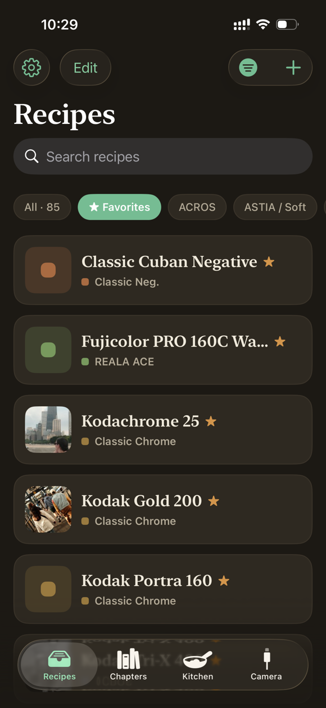
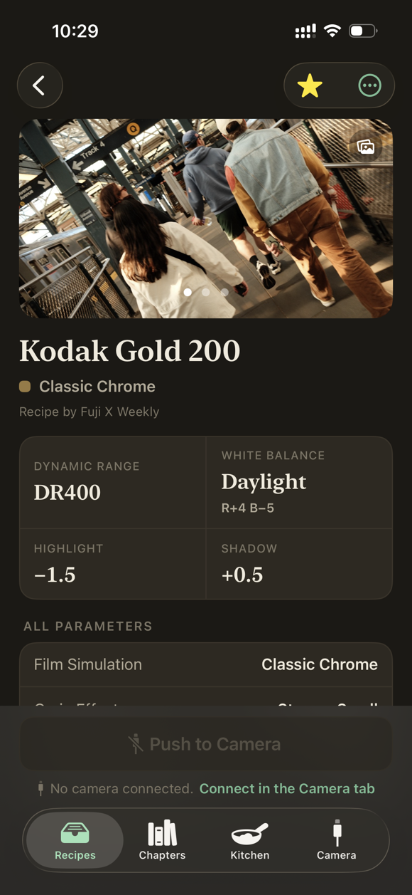
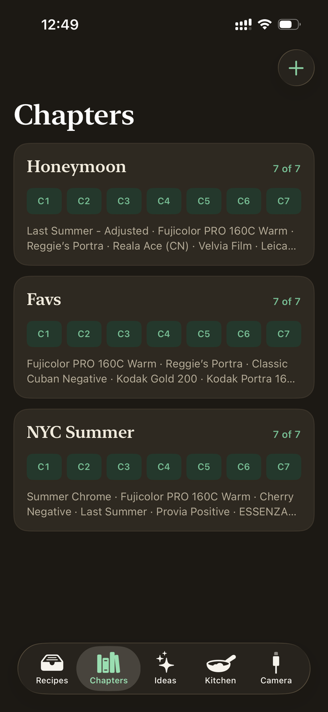
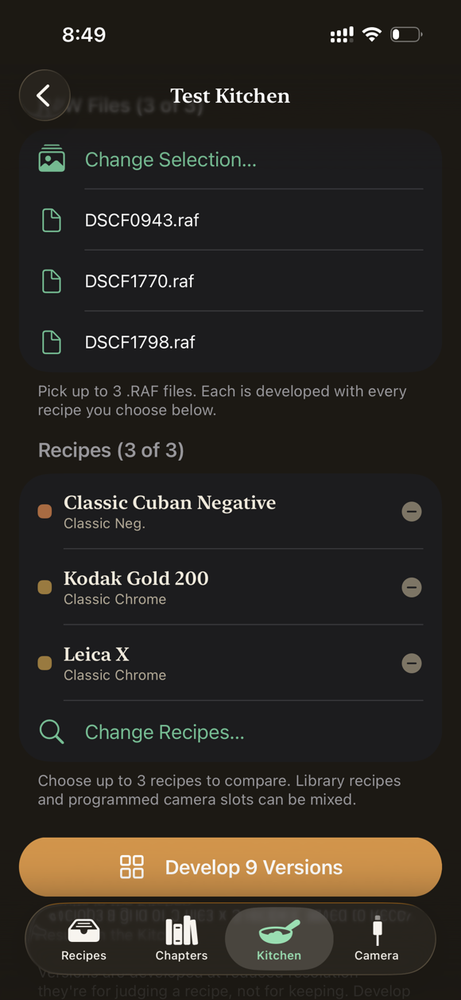
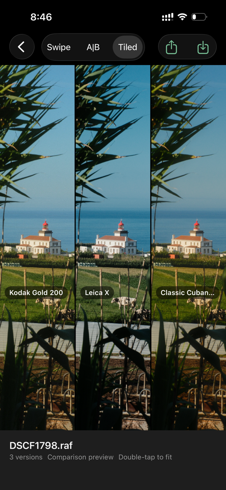
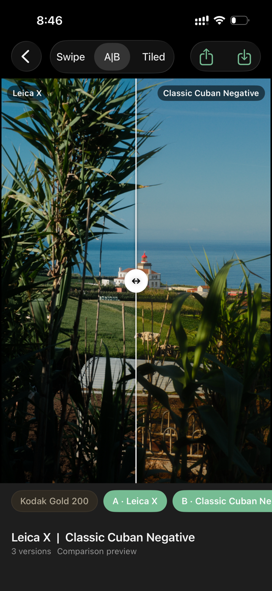

A digital cookbook for your Fujifilm camera
Import recipes from anywhere, manage and search your library, test recipes on your own RAW files, and push your favourites straight to your camera. All for free. No ads, no account, no upsell.
A look at the app



Free means all of it
- Import recipes from anywhere
- Favourite, search, tag, and filter
- Unlimited recipes and chapters
- Push to your camera over USB
- Test recipes and redevelop your RAWs
- No ads, no account, no upsell
Introducing the Test Kitchen
Every recipe was shot in somebody else’s light.
Sample photos of recipes you find tell you how a recipe looked on their day, in their weather, pointed at their subject. They don’t tell you how it handles yours.
So try it first. Pick up to three of your own RAW files, run up to three recipes across them, and compare the grid. Your camera does the rendering over USB, so you’re looking at exactly what it would have made.



Free, you say? Yes, really.
I built this for myself, and I’m happy to share it with the Fujifilm community.
It stays free because there’s nothing to bill you for. There’s no account, so your library lives on your phone rather than on my servers, which means I’m not paying to store it. The one AI feature runs on your own key, so I’m not paying for that either. No subscription, no locked features, no ads.
-
Your recipes, on your phone.
Stored locally in the app, no account required. Back them up to your own iCloud if you want. Nothing is sent to me and nothing is stored on my servers, apart from basic app analytics — and there’s a switch to turn those off.
-
One optional AI feature.
Reading a recipe out of a screenshot needs a vision model, so it needs a key. Skip it and everything else in the app works exactly the same — you can always type a recipe in or import a file.
-
Bring your own API key.
Pick your provider and model, then paste your API key. It’s stored securely on your device and sent only to the provider you choose. You pay them directly; I don’t see your key or your AI usage.
Not out yet
Close, though. Leave an email and I’ll send one message when it’s available.